96533.1.1 — Michlala Jerusalem College, 2026–2027
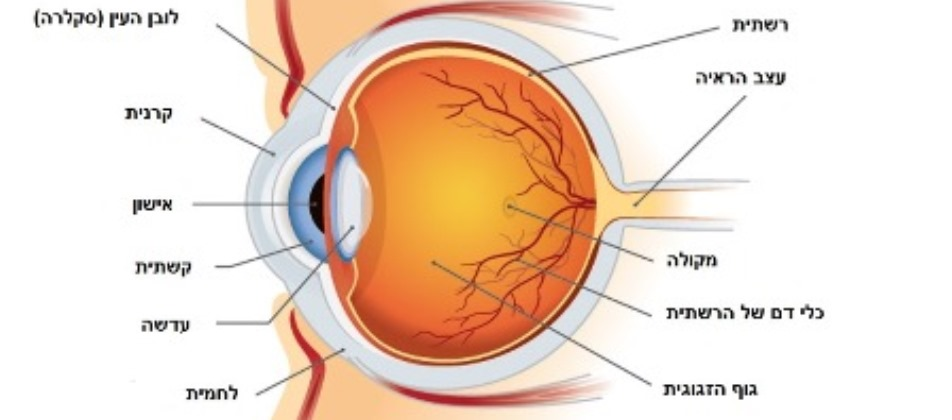
Source: Soroka Medical Center website
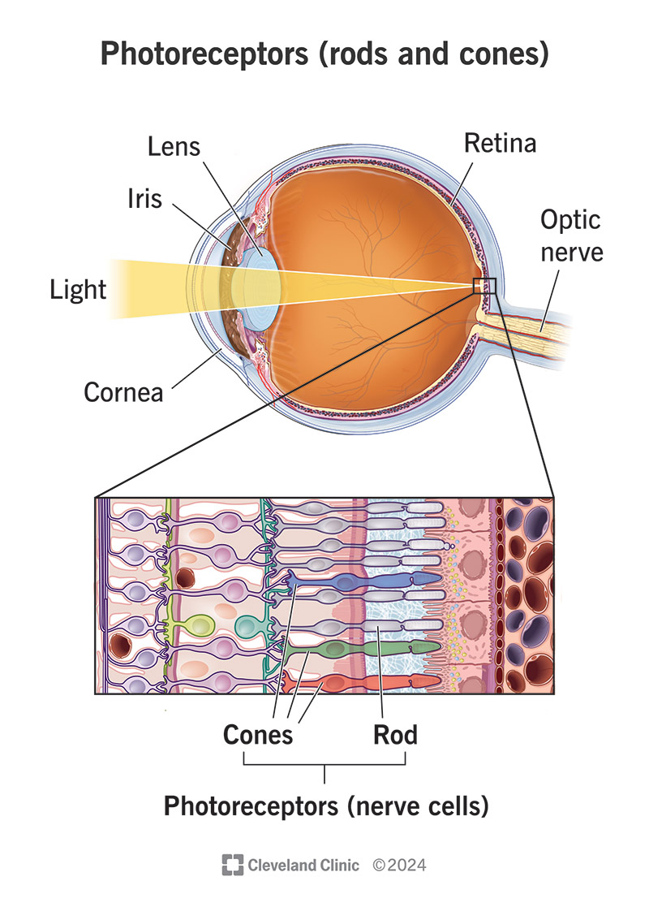
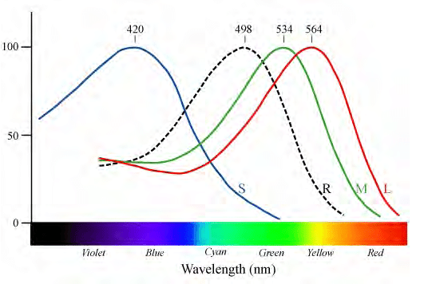
Source: researchgate.net/figure/Normalized-spectral-sensitivity-of-retinal-rod-and-cone-cells_fig7_265155524
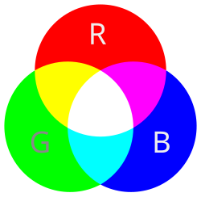
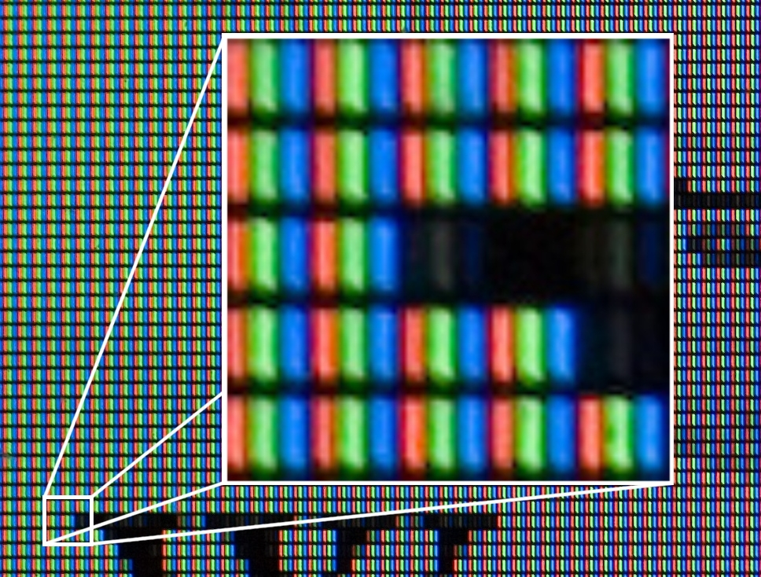
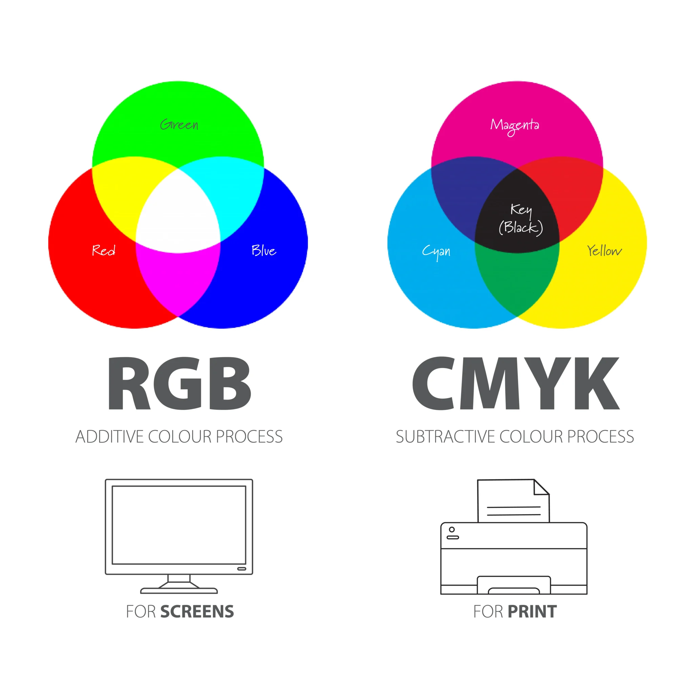
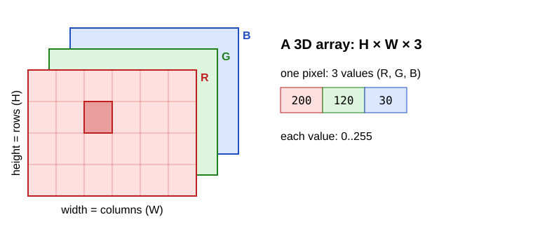
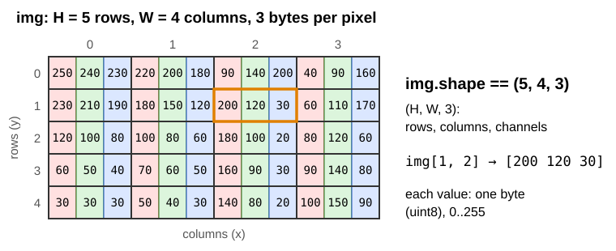
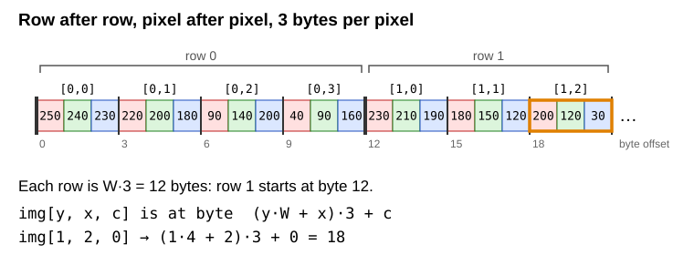
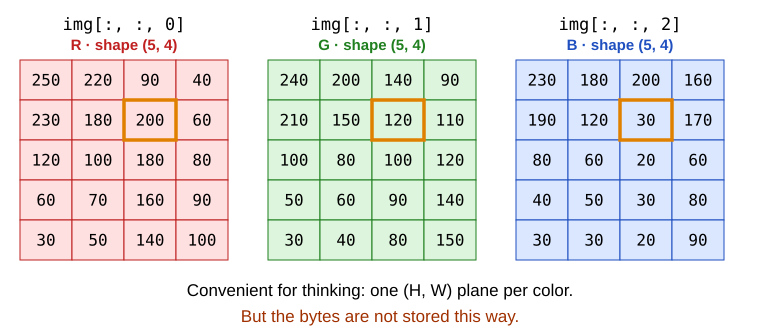
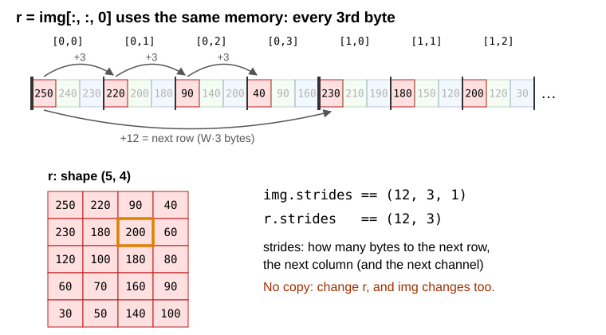
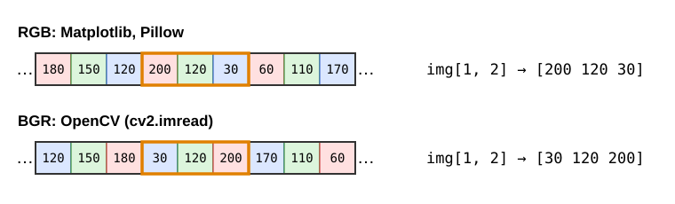
cv2.imread gives B, G, R: img[:, :, 0] is the blue channel.cv2.cvtColor(img, cv2.COLOR_BGR2RGB).shape == (H, W, 3) — rows, columns, channels.shape == (H, W) — one plane.img[row, col] — that is img[y, x], not img[x, y].0 .. 255.00000000 = 0, 11111111 = 255.11111111 + 1 = 1 00000000 → the 9th bit does not fit → 0
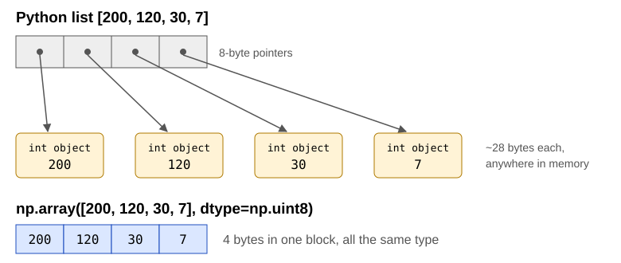
Brighten a 300 × 400 color image (360,000 values):
| time | |
|---|---|
| Python loop | ~100 ms |
| NumPy | ~1 ms |
code/loop_vs_numpy.py.dtype| dtype | bytes | range |
|---|---|---|
np.uint8 |
1 | 0 .. 255 |
np.int16 |
2 | −32,768 .. 32,767 |
np.int32 |
4 | about ±2.1 billion |
np.float32 |
4 | ~7 significant digits |
np.float64 |
8 | ~16 significant digits |
Images are almost always uint8.
For a color image: shape == (H, W, 3), ndim == 3.
No loops: one expression works on the whole array.
max(axis=...): the axis you name disappears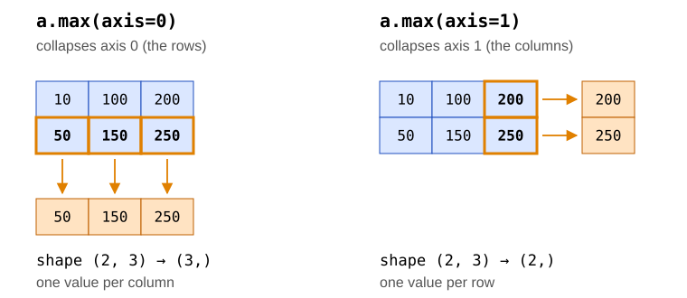
axis=0 runs down the rows → one result per column. axis=1 runs along a row → one result per row.min, sum, mean, ...axis=1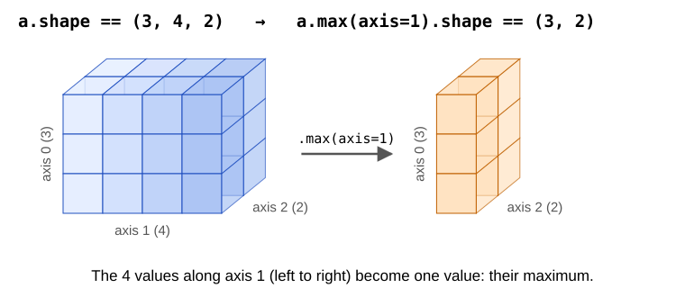
(3, 4, 2) without axis 1 → (3, 2). Rule: remove the named axis from the shape.axis=1, with numbers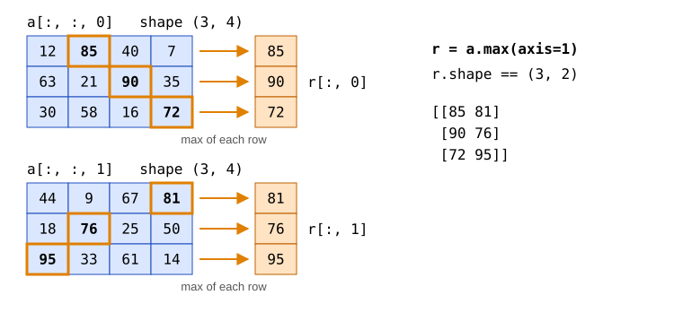
Each depth slice a[:, :, d] is a 2D plane — like a color channel img[:, :, c].
axis can be a tupleFor an image img with shape (H, W, 3):
axis=(0, 1) collapses rows and columns: all H × W values of a channel become one number.(3,), a 1D array of 3 values.img.max(axis=(0, 1)) gives the same as img.max(axis=0).max(axis=0), in one step.axis at all: every axis disappears, and the result is one number.uint8 wraps arounduint8 + int is uint8, computed modulo 256.The safe way back to an image:
np.clip — values below 0 become 0, above 255 become 255.astype — converts to another type. Without clip, out-of-range values give garbage.Exercises 1–3 in the exercises file.
cv2): written in C/C++ with a Python wrapper. Industry standard, optimized for speed. Images are NumPy arrays.sys.argvsys.argv is a list of strings: the program name, then each word typed after it.sys.argv is ['ex04.py'], and sys.argv[1] raises IndexError.python ex04.py "my photo.jpg"..py file.sys.exit(1) stops the program. A non-zero value means "something went wrong".import sys
import cv2
filename = sys.argv[1] # check len(sys.argv) first, as before
img = cv2.imread(filename)
if img is None:
print("failed to read", filename)
sys.exit(1)
print(type(img), img.dtype, img.shape)
# <class 'numpy.ndarray'> uint8 (400, 300, 3)
print(img[0, 0])
# [122 133 117] <- B, G, R !cv2.imread does not raise an error for a missing file — it returns None.cv2.imread(name, cv2.IMREAD_GRAYSCALE) → 2D array.vmin=0, vmax=255, Matplotlib stretches each gray image to its own min..max — and brightness changes become invisible.plt.savefig before plt.show(): once the window is closed, the figure is gone.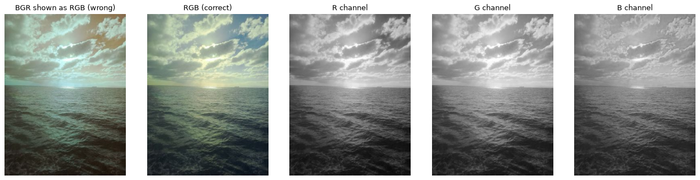
code/show_image.py
img + b.img * k.NumPy, done right:
int16? Because uint8 + 100 already wrapped around before clip could see it.code/brightness_contrast.py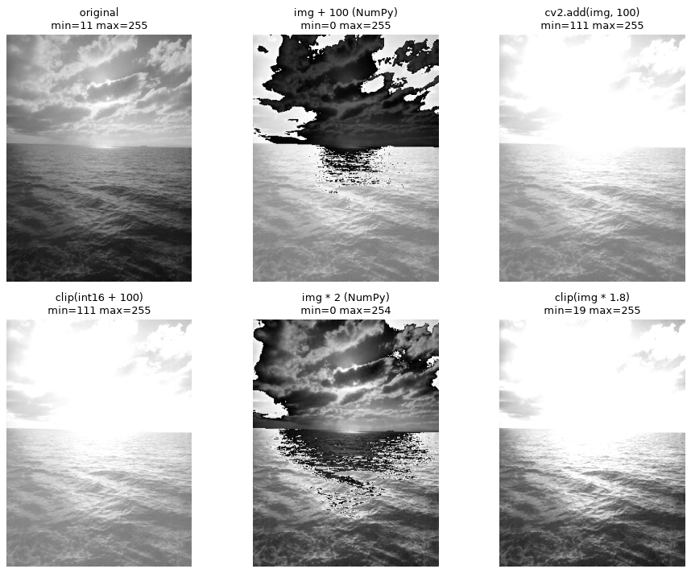
Exercises 4–6 in the exercises file.
img[10, 20] # one pixel: [B G R]
img[10, 20, 2] # one value: the R of that pixel
img[:, :, 2] # the R plane, shape (H, W)
img[100:200, 50:150] # a crop: rows 100..199, columns 50..149
img[::2, ::2] # every second row and column: half size
img[::-1, :] # rows in reverse: upside down
img[:, ::-1] # columns in reverse: mirrorstart:stop:step — like Python lists, but one per dimension.
.copy() when you need an independent array.(400, 300, 3) * (3,) → each pixel's 3 values are multiplied by the 3 weights.img + 10 is broadcasting too: a scalar fits any shape.The eye is most sensitive to green and least to blue:
\[Y = 0.299\,R + 0.587\,G + 0.114\,B\]
axis=2 — sum over the channels; the result has one dimension less.
code/loop_vs_numpy.pyExercises 7–10 in the exercises file.
Digital Image Processing